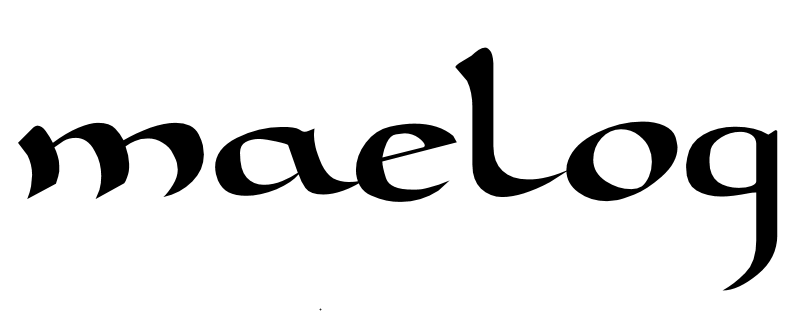

maglācos
-
Gallaecian Gods
All of this information was compiled by Nimmedios sans the honorable mention, formatting, and spelling corrections.
GODS AND GODDESSES OF NORTHERN GALLAECIA
·Aedovios (EDOVIOS)
Etim.: *aidu-yo- "the fiery one, that one who burns" (there is the possibility that such name is an epithet
of another deity)
Nat. Func.: tribal-local god, probably associated to fire (on the feeding and warming aspects, and
perhaps messenger [who conducts the offering] too), to magic, to accesses and maybe to staying in
otherworld and to military protection.
Symbol: flame (?)
·Ariounoi (ARIOVNOI/ARIOVNI)
Etim.: *aryo-ono- "great masters, free, nobles" or from *ar-yo-ono- "large plows, farmers" or from *ar-yaw-no- "those which are plowed " or even from *pharyāno- "guards, watchmen"
Nat. Func.: probably another name to the horse-like twins - vd. Equounoi (the epithet *menekko-segoāko- > **minko-seg-aiko- "of frequent conquests" appears to confirm); or even gods associated to
cultivation of the fields, to salvation of tillage, foundation and social/religious stratification (if associated
to Indo-European *Aryomen-), so that it would designate another pair of divine Indo-European twins (one
responsible for the sacrifice of the brother, and for the introduction of civilization as the other – the
sacrificed one – for the world formation and the dead world regency [vd. Regō?]).
Symbol: plow (?)
·Bandā or Bandis (BANDA, BANDIS, BANNIS)
Etim.: vd. Bandus
Nat. Func.: female side of god Bandus, of tribal character, associated to entrance to Otherworld,
protection of waters and springs which nurture community, to good luck, wealth and success, to
weddings, family harmony, religious piety and good relationships.
Symbol: mistletoe, holy fire on the altar, curved tree (all this elements refer to religious practice)? wheel
of fortune?
·Bandus (BANDVS, BANDIS, BANDVA, BANNIS)
Etim.: *bandi- "drop, flowing, flow", or *bend- "bind, tie" ou *bandu- "melodic, sounding", or also from
*gʷheid- "strong, swollen"
Nat. Func.: tribal-communitarian and supra-regional god, associated to the armed protection of the
community, home, family, the war, bonds and community commitments (that may include justice and
contracts), warriors’ education and moral virtues, fields protection and communitarian sources of
survival (including creeks and streams, etc.).
Symbol: canines, torc, viriae (?), caprine (especially goat?)
·Berobreus (BEROBREVS)
Etim.: *berro-breu- "hill, mount, short swelling " *beru-breu- "spiky hill" *wēro-breu- "curve swelling "
Nat. Func.: topic god, local; associated to the Hill where his sanctuary is in Faxo de Donón, probably
associated to local protection and prosperity of the local community.
Symbol: ?
·Bodos (BODOS)
Etim.: *bodo- "contentment, pleasure, satisfaction, good will" or with *boudyo- "victorious, conquerer"
Nat. Func.: tribal-local god, probably associated with joy (perhaps, inebriation and plants related to such
states), good moral disposition, kindness; or maybe with the winds, conquest, triumph, savagery and
battles.
Symbol: ?
·Cohus (COHVS – would it be a version of Cossus? On an inscription there is the epithet **tenis, where
Cohuē Tenē – that created the interpretation that this was the brythonic goddess Coventiná)
Etim.: vd. Cossus
Nat. Func.: it is probable to be the god Cossus; if not apparent, even yet to be a tribal god of similar
functions (perhaps more connected to metallurgy).
Symbol: ?
·Cossus (COSSVS, COSSOS, COSOS, COSVS, CVSOS)
Etim.: *kotsu- "the one who causes incision, cut" or *kond-s-u- "the one who flames, burns" ou *koχsu-
"articulator"
Nat. Func.: tribal and super-regional god, associated to war, battlefield leadership, warlike morals and
virtues, fury (possibly to prideful heat and warrior frenzy), to diplomacy and military unit; probably
associated to mines (to smithy and work on metal) and coastal zones (to sea and winds).
Symbol: dog, sword (?), wolf (?), caprines (?)
·Degantiā (DEGANTIA)
Etim.: *di-n-g-ant-yā "that one which is kneading, pressive, forming" or from *dī-gan-it-yā- "that one who
is born from, born"
Nat. Func.: tribal-community goddess, probably associated to wild animals, woods, huntings, armed
protection and to dating or to sexual activity (and perhaps, to its lunar associations).
Symbol: moon?
·Equounoi (EQVEVNOI/EQVEVNI)
Etim.: *ekʷē-suno- "equestrian sons" or from *ekʷo-ono- "great horses, stallions"
Nat. Func.: twin gods of tribal-community aspect, associated to salvation in hard situations, helpers in
the enterprises, speed in paths, prosperity, (eternal) joviality, horses and transports; maybe they are sons
of Reus (or even, of Vestios) and be associated to dawn and dusk (and perhaps to the protection of
heralds and messengers).
Symbol: white horses, morning-star and evening star (?)
·Lugues (LVGVES, LVCOVES)
Etim.: *lugu- "god Lugus" < *loukyo- "shiny"
Nat. Func.: super-regional god, multi-skilled, related to dexterity, general ability, expertise, wide
professional capacity, inventiveness and creativity, economic prosperity, money, fast profits, negotiations
(what includes contracts and oaths), general communication (including omens), technology, paths,
transports, taking opportunities, conquests, victories and temporary war leadership.
Symbol: shoes, shine/light, spear (thunderbolt?), fast (white) horse, corvideans (ravens, specially with
white wing tips), rooster, small birds, experts and fast ones, moneybag.
·Matres (MATRES)
Etim.: *matīr "mother"
Nat. Func.: super-regional deities (also worshiped in Betica-Vetonia), mostly presented as a triplet,
associated to motherhood, nurture, breastfeeding, abundance, family and wives protection; perhaps
they’re also associated to fate, death and tribal motherhood. There are those who defend that each one
of the Matres had several functions, based on Gaulish epigraphy, one being associated to motherhood,
breastfeeding and pregnancy, while other one (with a crone appearance and her head fully covered)
watching over familiar behavior, childbirths and perhaps fate and death, and another associated to
abundance and domestic prosperity.
Symbol: triplets wearing long clothes, with a one breast at display, midwives, snakes (?), milk (?)
·Moelios (MOELIOS)
Etim.: *moilyo- "that one who is modest, simple"
Nat. Func.: tribal-local deity, probably associated to flooded fields, ponds, to otherworld, fertility and
aquatic aspects of cure, transformation, regeneration and perhaps, divination .
Symbol: ?
·Naviā (NABIA, NAVIA)
Etim.: *nawyā "that who floats over the water " or *nawi-yā "from the valley " or nāw-yā "ship-shaped
valley"
Nat. Func.: supra-regional threefold goddess, associated (1) to sovereignty, command, abundance of the
earth, natural/seasonal providence; (2 -*Coronā aspect) military protection, Otherworld and aquatic
access to it (including fountains and wells), and (3 - *Nymphā aspect) forests and desert places, wild
animals, moon, springlike freshness (probably also associated to deliveries/births and to chastity or to
sexual fecundity and fertility).
Symbol: (white) dove, apple (?), crescent moon (?), grove, river and hill (?), rabbit-hare (?)
·Regō (REGO)
Etim.: *reg-on- "extension, that covers, rules" or from *rek-on- "who arranges, put in order", *rēgo-n-
"union, bond" or from *rei-g-on- "torture"
Nat. Func.: tribal god, associated to the dead, probably to ruling in otherworld (perhaps on
celestial/stellar aspect).
Symbol: stars (?), yew tree (?)
·Rēus (REVS, REVVS, REOS, REVIS)
Etim.: *reu-, rēu- "murmur, roar, river"; *rewǝ-, *rewu- "open space " or *rewi- "time break, duration"
Nat. Func.: supreme and supra-regional god (with a real possibility to have a primordial function on
comogony), associated to sky, clouds and heavenly waters (and probably to thunder) and beneficial
waters as well (including boiling springs when he gets the epithet *borman-iko- “bubbly”), to time
counting (by the moon and stars at large), change of seasons and fertility from heavenly origin, as well
as victory and heavenly balance.
Symbol: rayed wheel, heavy cloud (probably lightning bolt and perhaps a mace), mountain, raging river,
bull and oak.
·Rēvā (REVA, REA)
Etim.: vd. Rēus.
Nat. Func.: Female side or mate deity to god Rēus, super-regional goddess (with a real possible function
at creation), associated to running waters, Otherworld’s access, creation, nurture and “aquatic” fertility,
as well as possibly to love and marital virtues.
Symbol: running river, cow(?)
·Sannoavā (SANNOAVA)
Etim.: *sanwo-awā "torrent, strong river" ou *san-no-awā "river that reaches, floods" ou de *sowonoawyā "sun's descending one, (grand) daughter"
Nat. Func.: tribal-local goddess, associated to streams, rivers, Otherworld's access, and maybe to
purification, wells, medicine, sun and professional learning and activities.
Symbol: stream, well (?)
·Torolos (TOROLOS)
Etim.: *torolo- "the one that goes through, potent" or maybe "mount, hill"
Nat. Func.: tribal god, probably associated to confrontation, warrior onslaught (the epithet **kom-bikiaiko- < *kom-beikk-y-āko- "the one who roars along" might indicate this), or perhaps he is associated to
mounts, hills and to the ways to otherworld.
Symbol: hill (?)
·Vacos (VACOS, VAGOS)
Etim.: *wako- "empty, vague, curve"
Nat. Func.: tribal god, probably associated to the otherworld, dead, power, cattle and of possible
fecund/magic, sinister/terrible and dark aspect .
Symbol: mace (?), pot/cauldron (?), black bull (?), dark sky/night (?)
·Vēror (VEROR, VIRROR)
Etim.: *werro- "elevated, better" or from *wēro- "twisted, curved, round"
Nat. Func.: tribal-community deity, probably associated to rounded elevations (hills), fertility and maybe
intellectual arts (including music), cure or magic (an epithet of him **wili-aiko- > *wlek- "glowing,
fiery"), or even to the sun.
Symbol: ?
·Vestios (VESTIOS, VESTEROS)
Etim.: *westyo- "the one who eats, grazes, devours" or "the one who remains" *westi-ro- "eater,
ravishing"
Nat. Func.: tribal-community god, probably associated to nutrition (of cattle and humans), pastures, as
well as possibly the sky (the morning and evening star on transition moments between day and night? Or
to the clear sky?) and perhaps to the winds. There are those who defend that the epithet Vesteros is
about this god, in other words, another name of his (and there are those who relate such epithet to god
Cossus and to Rēus)
Symbol: stirrup (?) , sky (?), cattle (?)
Possible pantheonic pattern.
1. Primordial gods, according to the Indo-European model:
*Dyēus Ph2tēr - Rēus
*Deiwos - Rēus
*Plth2wih2 - Naviā
*Perkʷunos - Rēus (?) Lugues (?)
*H2eus(os) - Aedovios or Vestios?
*PriHeh2 - Matres or Degantiā?
*Deh2nu- - Rēvā
*Welnos - Vacos or Vestios (?)
*Gêmeos: *Manu- & *Yemo- (*Aryomen-) - Ariounoi, one of the twins would be Regō? | *Seh2ul &
*Meh1not – Veror/Sannoavā & Degantiā/Naviā (Nymphā)? | *Ekʷo- - Equounoi
*H2epom Nepots - Cossus?
*Peh2uson - ?
2. Tribal gods according to a Celtic continental model:
*War, protection, politics, alliances, citizenship: Bandus (>Toutātis)
* War, armies, justice, leadership: Bandus, Torolos, Cossus (>Noudans, Camulos)
*Families, weddings, marital harmony: Bandis (>?)
*Motherhood, family, destiny, births, death, marital virtues, domestic prosperity: Matres (>Matres/Matronās)
*Metallurgy, battle fury, ilumination (perhaps to maritime duties): Cossus (>Gobannū and Camulos)
*Businnes, money, prosperity, conquests, paths, hability: Lugues (>Lugus)
*Eloquence, music, strenght, solar healing (and prophecy): Vēror? (>Ogmios and Grannos, Belenos)
*Medicine, begginings on crafts/inspiration, domestic flame: Sannoavā and Aedovios (>Sūlis, Brigindū)
*Nurture, abundance, fertility and general prosperity: Naviā (>Rosmertā, Eponā)
*Sex, women’s magic (and prophecy), fertility, armed protection: Degantiā? (>Nemetonā)
Most worshipped Gods:
-Rēus, Bandus, Cossus, Naviā, Lugues.
Honorable mention:
Taranis was not included on this list for an unknown reason. It's unclear where he would fit in the pantheon. There is etymology of his name all over Iberia, including in Northern Portugal (Taranhol), Galicia, (Tarano), and in Asturias, (Tarañu and Taranu).
GODS AND GODDESSES OF SOUTHERN GALLAECIA
·Bandā or Bandis (BANDA, BANDIS, BANNIS)
Etim.: vd. Bandus
Nat. Func.: female side of god Bandus, of tribal character, associated to entrance to Otherworld,
protection of waters and springs wich nurture community, to good luck, wealth and success, to
weddings, family harmony and good relationships.
Symbol: ?
·Bandus (BANDVS, BANDIS, BANDVA, BANNIS)
Etim.: *bandi- "drop, flowing, flow", or *bend- "bind, tie" ou *bandu- "melodic, sounding", or also from
*gʷheid- "strong, swollen"
Nat. Func.: tribal-communitarian and supra-regional god, associated to the armed protection of the
community, home, family, the war, bonds and community commitments (that may include justice and
contracts), warriors’ education and moral virtues, fields protection and communitarian sources of
survival (including creeks and streams, etc.).
Symbol: canines, torc, viriae (?), caprine (especially goat?)
·Candeberonios (CANDEBERONIOS)
Etim.: **kande-berounyo- < *kando-berawn-yo- “the bearer of the candid light, the glowing” or from
*kando-ber-on-yo- “the great bearer of the candid light, glow”.
Nat. Func.: it is probable that such name consists on a tribal-local epithet of a deity, perhaps Rēus
himself (the other epithet is *kaito-rād-e-yo- “the one who speaks through the forest” or *kaito-rātyo-
“from the forest’s course”); god probably associated to sky (possibly to sun or, more properly, the moon),
to seasonal changes, celestial fertility (what might include the lightning bolt) and perhaps to woods and
wild life.
Symbol: circle (?), ray of light (?)
·Cossus (COSSVS, COSSOS, COSOS, COSVS, CVSOS)
Etim.: *kotsu- "the one who causes incision, cut" or *kond-s-u- "the one who flames, burns" ou *koχsu-
"articulator"
Nat. Func.: tribal and super-regional god, associated to war, battlefield leadership, warlike moral
virtues, fury (possibly to prideful heat and warrior frenzy), to diplomacy and military unit; probably
associated to mines (to smithy and work on metal) and coastal zones (to sea and winds).
Symbol: dog, sword (?), wolf (?), caprines (?)
·Crougiā (CROVGA, CROVGEA, COROVGIA, CROVCIN?)
Etim.: *krouk-yā "the one from the hill, pile of stones "
Nat. Func.: super-regional deity, associated to hills, cliffs, flooring, boundaries and lands, to seasonal
changes, soil wealth, blessings and prosperity; and possibly to magic, earth’s uncontrollable forces
(pests, wild animals, etc.) and to the otherworld.
Symbol: pile of rocks, horn (?), hog (?), yew-tree (?)
·Dēvās Nemucelaecās (DEIBAS NEMVCELAECAS)
Etim.: **deiwās nemukelaikās < *deiwās nemo-kel-ākās “the goddesses that conceal the poison” or from
*deiwās nemo-kell-ākās “the goddesses that strike the poison” (or even from *-keil- “companion” or from
*-kely- “death”) or from *deiwās nemos-keil-ākās “the escort goddesses of the sky” (*nemu- may come
from PIE *nem- wich can mean “put in order, count” and also “bind, unite, link” in a religious way vd.
POKORNY, 2007. p. 2185-2187)
Nat. Func.: generic designation for the tribal goddesses of possible celestial nature, perhaps associated
to stars, to (access to) otherworld and/or to cure, restoration.
Symbol: stars (?)
·Durvēdicos (DVRBEDICOS)
Etim.: *dūro-weid-iko- "the one of hard knowing " *duro-weid-iko- "the one who knows the door/portal”
Nat. Func.: tribal-local god, probably associated to passages, ways, otherworld accesses; perhaps also to
fire as messenger, knowledge (and related professional activities, maybe to arts as a whole) and oak
woods.
Symbol: door, oak (?)
·Lidā (LIDA)
Etim.: *φlitā “expanded, spread”
Nat. Func.: tribal-local goddess, associated to land, to fecundity, vernal fecundity of plant life, flowers, to
wild animals, perhaps associated to beauty and joviality.
Symbol: flowers (?), thaw (?)
·Līmiā (LIMIA)
Etim.: *līmo-yā "the one from the flooding, who floods "
Nat. Func.: topic-local goddess of Lima river, associated to otherworld’s access (what the ancient world
associated to otherworld’s river, that the greeks called Lethes and the romans Obliuium).
Symbol: Lima river
·Matres (MATRES)
Etim.: *matīr "mother"
Nat. Func.: super-regional deities (also worshipped in Lusitania, Betica-Vetonia), mostly presented as a
triplet, associated to motherhood, nurture, breastfeeding, abundance, family and wives protection;
perhaps they’re also associated to fate, death and tribal motherhood. There are those who defend that
each one of the Matres had several functions, based on Gaulish epigraphy, one being associated to
motherhood, breastfeeding and pregnancy, while other one (with a crone appearance and her head fully
covered) watching over familiar behavior, childbirths and perhaps fate and death, and another
associated to abundance and domestic prosperity.
Symbol: triplets wearing long clothes, with a one breast at display, midwives, snakes (?), milk (?)
·Naviā (NABIA, NAVIA)
Etim.: *nawyā "that who floats over the water " or *nawi-yā "from the valley " or nāw-yā "ship-shaped
valley"
Nat. Func.: supra-regional triform goddess, associated (1) to sovereignty, command, abundance of the
earth, natural/seasonal providence; (2 -*Coronā aspect) military protection, Otherworld and aquatic
access to it (including fountains and wells), and (3 - *Nymphā aspect) forests and desert places, wild
animals, moon, springly freshness (probably also associated to deliveries/births and to chastity or to
sexual fecundity and fertility).
Symbol: (white) dove, apple (?), crescent moon (?), grove, river and hill (?), rabbit-hare (?)
·Nimedos (NIMMEDOS)
Etim.: *nemeto- "sacred, noble"
Nat. Func.: tribal-local god, associated to military protection (whose epithet *ad-sed-y-āko-, “that stops,
interrupt, ceases [invasions?]”), to sanctuaries protection, to war; probably also associated to justice,
clouds, winds and to protection of the laws.
Symbol: sword (?), right hand (?)
·Ocaeris (OCAERIS)
Etim.: *okero- "sharp, penetrating, discerning" or *okairo- "sharpness, acumen” or from *ok-kairā
"berry/acute fruit"
Nat. Func.: tribal-local goddess; perhaps associated to intuition, intelligence (crafts learning, inspiration,
and perhaps prophecy); or maybe to fruit and local vegetation.
Symbol: domestic fire (?), wild fruit (?)
·Quangeios (QVANGEIOS, QVAMGEIOS)
Etim.: *kuwón-C > *kuwan-kē-yo- "canine" (PRÓSPER, 2002, p. 310) or from PrC *kuφo-angyo-
"narrow/hill passage"
Nat. Func.: super-regional deity, associated to fertility, soil fecundity, lands and wealth; possibly
associated to otherworld, regeneration, change of the seasonal cycles, perhaps magic and government of
the dead; he might have some primordial function.
Symbol: cauldron, mace/hammer (?), apple (?)
·Rēus (REVS, REVVS, REOS, REVIS)
Etim.: *reu-, rēu- "murmur, roar, river"; *rewǝ-, *rewu- "open space " or *rewi- "time break, duration"
Nat. Func.: supreme and supra-regional god (with a real possibility to have a primordial function on
comogony), associated to sky, clouds and heavenly waters (and probably to thunder) and beneficial
waters as well (including boiling springs when he gets the epithet *borman-iko- “bubbly”), to time
counting (by the moon and stars at large), change of seasons and fertility from heavenly origin, as well
as victory and heavenly balance.
Symbol: rayed wheel, heavy cloud (probably lightning bolt and perhaps a mace), mountain, raging river,
bull and oak.
·Rēvā (REVA, REA)
Etim.: vd. Rēus.
Nat. Func.: Female side or mate deity to god Rēus, super-regional goddess (with a real possible function
at creation), associated to running waters, Otherworld’s access, creation, nurture and “aquatic” fertility,
as well as possibly to love and marital virtues.
Symbol: running river, cow(?)
·Senaecos (SENAICOS)
Etim.: *senāko- "ancient one, ancestral"
Nat. Func.: probably it is a tribal epithet for a primordial god related to human race (one of IndoEuropean twins *Manu- or *Yemo-, or from *Aryomen-?) or even to one of the most worshipped gods
(Rēus, Quangeios or, less possibly, Bandus); probably a human and/or ethnic group ancestral, associated
to otherworld, death, birth, continuous blood; perhaps to the ruling and/or reception of the dead.
Symbol: human head /skull, yew (?), apple (?)
·Sūliās (SVLEAS)
Etim.: *sūli- "sun, eye"
Nat. Func.: topical deities, probably associated to the gallo-brythonic goddess Sūlis/Suleuiā; associated
to medicine, cure, fountains and springs, possibly to beneficial aspects and sun healers, to the cure of
vision problems, to nutrition and motherhood, as well as to the beginnings on crafts, arts and protection.
Symbol.: well (?), sun (?)
·Tongos (TONGOS)
Etim.: *tungo- "oath" or *tanko- "peace"
Nat. Func.: local-topic deity, associated to otherworld’s accesses (especially fountains and wells),
probably associated to agreements, oaths, magic protection (and armed, maybe with the forge), as well
as possibly associated to fertility; there is the possibility of being an aspect of god Quangeios, more
related to armistice and to general oaths.
Symbol: hammer, stone fountain
·Āernos (AERNOS, ERNOS)
Etim.: *āyer- "day, morning" (POKORNY, 2008. p. 252) > *āyerno- "daytime, morning one"
Nat. Func.: tribal deity, supreme god of Zoelae, celestial and primordial; possibly associated to clouds,
winds, to time counting and weather changes at large, as well as the fertility from a celestial origin and
perhaps to solar shining.
Symbol: sky
·Albocelos (ALBOCELOS)
Etim.: *albo-kelo- "white hight; white hidden " or *albo-kello- "white striker " or from *albo-okelo- "white
promontory"
Nat. Func.: tribal-local deity, probably related to a specific mount and its vegetation, to protection and
defense; or perhaps to the (and activities related to arts, crafts, etc.)
Symbol: hill, circle (?)
·Densos (DENSOS)
Etim.: *dens- "dense, compact, strong" (POKORNY, 2008. p. 591) or from *dṇs-u- "the one who is able,
talented, has magic strength " > *densos- "talent, magic/mental strength" (REDENTOR, 2008. p. 112)
Nat. Func.: tribal deity, probably associated to habilities, crafts, magic, ways, to fire, light, erudition and
intellectual activities (including omens); perhaps also related to conquers, strength and wealth.
Symbol: cauldron (?), stick (?), corvids (?)
·Laesos (LAESOS)
Etim.: *lai- > *layes- (POKORNY, 2007. p. 1831) "large, fertile" or from *leis- (REDENTOR, 2008. p. 111)
"gully, tear in the earth"
Nat. Func.: tribal-local deity, probably linked to valleys, cracks or cliffs; possibly related to prosperity,
seasonal changes, vegetation, otherworld and to the dead.
Symbol: ?
Possible pantheonic model.
Primordial Gods, according to IE model:
*Dyēus Ph2tēr - Rēus
*Deiwos - Rēus or Nimedos? | Āernos
*Plth2wih2 - Lidā, Naviā
*Perkʷunos - Rēus or Quangeios? | Densos
*H2eus(os) - Dēvās Nemucēlaecās, Sūliās or Ocaeris?
*PriHeh2 – Matres, Naviā?
*Deh2nu- - Rēvā, Līmiā
*Welnos - Senaecos or Crougiā? | Laesos?
*Twins: *Manu- & *Yemo- (*Aryomen-) – would any of them be Senaecos? | *Seh2ul & *Meh1not – Sūliās;
Albocelos? & Candeberonios/Naviā (Nymphā)? | *Ekʷo- - ?
*H2epom Nepots - Cossus?
*Peh2uson – Crougiā?
Tribal Gods according to a continental Celtic model:
*War, protection, politics, alliances, citizenship: Bandus (>Toutātis)
*War, armies, justice, leadership: Bandus, Nimedos (>Noudans, Camulos)
*Fortune, common wealth, marriages, harmony: Bandis, Matres (>?)
*Motherhood, family, destiny, births, death, marital virtues, domestic prosperity: Matres (>Matres/Matronās)
*Metallurgy, battle fury, enlightenment (perhaps maritime duties): Cossus (>Gobannū and Camulos)
*Business, money, prosperity, conquers, ways, ability: Durvēdico or Tongos, Crougia? | Densos (>Lugus)
*Eloquence, music, strength, solar healing (and prophecy): ? | Albocelos (>Ogmios and Grannos,
Belenos)
*Medicine, beginning on crafts/inspiration, domestic flame: Sūliās, Ocaeris (>Sūlis, Brigindū)
*Nurture, fecundity, abundance and general fertility: Naviā (>Rosmertā, Eponā)
*Sex, feminine magic (and prophecy), personal fertility, armed protection: Ocaeris, Naviā? (>Nemetonā)
Most worshipped Gods:
-Rēus, Bandus, Cossus, Naviā.
Honorable mention:
Taranis was not included on this list for an unknown reason. It's unclear where he would fit in the pantheon. There is etymology of his name all over Iberia, including in Northern Portugal (Taranhol), Galicia, (Tarano), and in Asturias, (Tarañu and Taranu).
maelog is a site that tries to catalog all modern and pre-historical elements of the Hispano-Celts.
This is a personal site of mine, and things are subject to update and change.